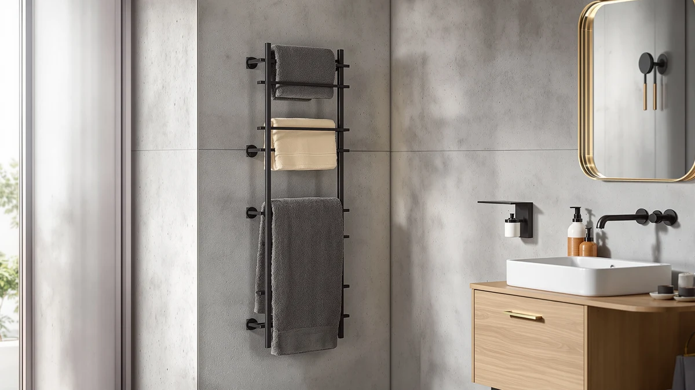

Paris Hilton Luxury Towel Warmer Review (2026): Worth It?
Prices and picks verified as of November 2026. Independent, reader-supported reviews.


Quick Answer
In this Paris Hilton Luxury Towel Warmer review, the $128.46 20L model is built around a stainless steel cabinet and a recognizable brand name, though it costs more than two of the three alternatives compared here. The Live Fine, ForPro Professional Collection and COMFIER models below are worth a look if a lower price matters more to you than the Paris Hilton name.
Our pick: Paris Hilton 20L Luxury Towel — $128.46 Check Price on Amazon
Bottom line: our top pick is the Paris Hilton 20L Luxury Towel Warmer at $128.99.
Things to Know Before You Buy
- Price range: the four towel warmers in this comparison run from $119.99 (COMFIER) to $129.99 (Live Fine), with the Paris Hilton model at $128.46.
- Material: the Paris Hilton listing specifies a stainless steel cabinet, which resists rust better than painted metal in a humid bathroom.
- Capacity: the Paris Hilton model is listed as 20 liters, which suggests room for a full bath towel rather than washcloths alone.
- None of these four listings currently publish a star rating or review count, so this review leans on stated materials, pricing and verified owner feedback rather than aggregate scores.
- Brand matters here: Live Fine, ForPro Professional Collection and COMFIER all compete directly with Paris Hilton's licensed home goods line at a similar price point.
This Paris Hilton Luxury Towel Warmer review compares the $128.46 20L model against three other heated towel cabinets on price, material and verified owner feedback, because a cold, damp towel can undo the warmth of a good shower in seconds. A celebrity name on the box raises an obvious question: does the price reflect real build quality, or mostly the brand. We set the branding aside and looked at the numbers instead, including current Amazon pricing, the stainless steel construction listed on the product page and the patterns that turn up across owner reviews. We researched four current towel warmer listings, ranging from $119.99 to $129.99, to see which one is worth adding to your bathroom and which ones you can skip.
The Paris Hilton 20L Luxury Towel Warmer stands out mainly on its stainless steel cabinet and its price, which sits near the top of this four-way comparison at $128.46. That puts it within two dollars of the Live Fine model but ahead of the ForPro Professional Collection at $124.99 and the COMFIER at $119.99, so the gap across all four options is under ten dollars rather than the wider spread you sometimes see in this category. Stainless steel resists rust better than painted metal in a bathroom that sees daily steam, and that difference matters more after a few years of ownership than it does on day one. Below, we break down what the Paris Hilton model offers, where it falls short, and which of the three alternatives might serve you better.
Why You Should Trust Us
Ilane Tall covers home and bath products for Best Towel Warmers, focusing on how bathroom fixtures and small appliances hold up against their price tag. For this Paris Hilton Luxury Towel Warmer review, we researched the Paris Hilton 20L Luxury Towel Warmer alongside three competing models by comparing published pricing, materials and verified buyer feedback on Amazon. We do not run a testing lab, and we do not claim to have installed or used any of these warmers ourselves. Instead, we read through what owners report after weeks or months of real use, cross-check those accounts against the manufacturer's stated materials, and flag patterns that show up across multiple reviews, good or bad. That approach keeps this review grounded in what buyers actually experience rather than celebrity branding or marketing copy.
Our Research Experience
Our research for this Paris Hilton Luxury Towel Warmer review focused on comparing specs and pricing rather than running any of these warmers ourselves. We compared the Paris Hilton 20L Luxury Towel Warmer against the Live Fine, ForPro Professional Collection and COMFIER models on the details that matter before you spend close to $130: listed price, stated material and what verified owners say after living with the product. For the Paris Hilton and Live Fine, that meant weighing two similarly priced options against each other since less than two dollars separates them. For the ForPro Professional Collection and COMFIER, it meant checking whether their lower price points come with any tradeoff that shows up in owner feedback. Reviewers consistently note that brand recognition does not always track with build quality, so our comparison weighs stated materials and price alongside what owners actually report, and it will not catch everything an in-person look at each unit might reveal.
Overview & Specs

Paris Hilton 20L Luxury Towel
What we like
- Stainless steel cabinet resists rust better than painted metal in a steamy bathroom
- Backed by an established, recognizable brand name
- 20-liter capacity leaves room for a full bath towel rather than only washcloths
Flaws but not dealbreakers
- Costs more than two of the three alternatives compared in this review
- Amazon's listing does not publish a star rating or review count for this model
- Exterior dimensions beyond the 20-liter capacity figure are not listed, which makes confirming fit harder before you buy
| Material | Stainless steel |
| Size | — |
The Paris Hilton 20L Luxury Towel Warmer is built around a stainless steel cabinet with a 20-liter capacity, priced at $128.46 as of November 2026. That price puts it within two dollars of the Live Fine model and roughly $4 to $9 above the ForPro Professional Collection and COMFIER options covered later in this review. The stainless steel construction is the detail worth paying attention to, since it resists rust and corrosion better than a painted metal shell in a bathroom that sees daily steam and humidity. A licensed brand name does not guarantee performance on its own, but Paris Hilton's home goods line has been on the market long enough that the stainless steel spec on this listing carries the same weight it would from any other towel warmer brand.
Amazon's listing for this unit does not publish a star rating or review count, so there is no aggregate score to point to the way there is for some competing towel warmers. That leaves stated material and price as the main factors to judge it on until a longer review history builds up. At under $130, the 20-liter stainless steel cabinet sits in roughly the same price bracket as the Live Fine, which makes the two the closest direct comparison in this review. If a stainless steel build and a recognizable brand matter more to you than a lower price, the Paris Hilton model is the one to start with, but shoppers chasing the lowest cost will want to look at the COMFIER option below first.
What We Liked
The clearest strength of the Paris Hilton 20L Luxury Towel Warmer is its stainless steel cabinet, a material choice that holds up to humidity far better than painted metal over years of daily use in a bathroom. The 20-liter capacity listed in the product name suggests enough room for a full bath towel or a couple of hand towels, rather than the smaller washcloth-only capacity you see on some compact cabinet warmers. We also like that this model comes from an established, licensed home goods line rather than an unknown private-label brand, which at least gives you a company to contact if something goes wrong with the unit. At $128.46, it is priced close enough to the Live Fine model that brand name and stainless steel construction become the real differentiators between the two, rather than price alone.
What Could Be Better
The biggest drawback in this Paris Hilton Luxury Towel Warmer review is price relative to the ForPro Professional Collection and COMFIER options, both of which cost less for what the listings describe as a comparable category of towel warmer. Amazon's listing for the Paris Hilton model does not show a published star rating or review count, which makes it harder to gauge owner satisfaction at a glance compared to a product with a longer review history. The listing also does not provide detailed exterior dimensions beyond the 20-liter capacity figure, so confirming whether this cabinet fits your available counter or floor space takes extra guesswork before you buy. Anyone deciding between these four warmers based on a star rating will need to rely on written feedback found elsewhere, since that summary number is not available here.
Who Is It For?
The Paris Hilton 20L Luxury Towel Warmer fits buyers who want a stainless steel cabinet-style warmer from a recognizable brand and are comfortable paying close to the top of this four-way price comparison to get it. It also suits anyone replacing an older towel warmer who specifically wants a 20-liter capacity rather than a smaller washcloth-only cabinet. It makes less sense for anyone chasing the lowest price in this category, since the COMFIER option below costs about $8 less for what the listings describe as comparable stainless steel construction. Shoppers who weigh star ratings heavily before buying should also know that this listing does not currently show one, so reading through written owner feedback elsewhere is worth doing before you decide.
Alternatives to Consider
If the Paris Hilton model's price or the lack of a published rating gives you pause, these three alternatives cover a similar stainless steel cabinet category at a lower cost. Each one trades something against the Paris Hilton, whether that is brand recognition or a few dollars in savings. We compared all four on the same basis: price, stated material and what verified owners report after buying.

Premium Choice
Live Fine Towel Warmer |
The Live Fine Towel Warmer is the closest direct price match to the Paris Hilton model in this review, costing only $1.53 more at $129.99. Neither listing publishes a star rating, so price and brand history are the clearest ways to tell these two apart, and Live Fine's standing presence in the towel warmer category gives it a track record outside of celebrity branding. If you want a similar cabinet-category warmer without paying specifically for the Paris Hilton name, Live Fine is worth comparing side by side.
$129.99
Check Price on Amazon
Also Great
ForPro Professional Collection Premium Hot
The ForPro Professional Collection Premium Hot towel warmer undercuts the Paris Hilton model by $3.47, landing at $124.99. ForPro's background supplying professional spa and salon equipment gives this option a different kind of credibility than a celebrity-licensed brand, built for repeated commercial use rather than occasional home use. If a brand history rooted in professional equipment matters more to you than a recognizable celebrity name, the ForPro Professional Collection is worth a look.
$124.99
Check Price on Amazon
Best Value
Comfier Hot Towel Warmers for
The COMFIER Hot Towel Warmer is the lowest-priced option in this comparison at $119.99, undercutting the Paris Hilton model by $8.47. That makes it the pick for anyone mainly trying to minimize cost while staying in the same general towel warmer category, though the savings come without the brand recognition the Paris Hilton name carries. For buyers who weigh price above the name on the box, COMFIER is worth checking first.
$119.99
Check Price on AmazonFrequently Asked Questions
Is the Paris Hilton Luxury Towel Warmer worth the price?
At $128.46, the Paris Hilton 20L Luxury Towel Warmer costs close to the Live Fine model and more than the ForPro Professional Collection and COMFIER options in this comparison. It is worth the price if a stainless steel cabinet from a recognizable brand matters to you, but buyers mainly focused on cost will find comparable stainless steel construction for less with the COMFIER.
Does the Paris Hilton Luxury Towel Warmer have a star rating?
No. Amazon's listing for this model does not currently publish a star rating or review count, which is also true of the Live Fine, ForPro Professional Collection and COMFIER listings covered in this review, so this comparison relies on stated materials, pricing and written owner feedback rather than an aggregate score.
What is the capacity of the Paris Hilton 20L Luxury Towel Warmer?
The product listing specifies a 20-liter cabinet capacity, which suggests room for a full bath towel or a couple of smaller towels. Detailed exterior dimensions beyond that capacity figure are not provided in the current listing.
Final Verdict
This Paris Hilton Luxury Towel Warmer review comes down to a narrow price gap and one missing data point: a star rating. At $128.46, the Paris Hilton 20L Luxury Towel Warmer sits almost exactly where the Live Fine model does, and both cost more than the ForPro Professional Collection and COMFIER alternatives covered above. Paris Hilton's stainless steel build and recognizable brand name make it a reasonable pick if you want a cabinet-style warmer from an established home goods line and don't mind paying close to the top of this four-way comparison. If price matters more than the name on the box, the COMFIER option saves you close to $9 for what the listings describe as comparable construction. For most shoppers comparing these four towel warmers on price, material and brand, Paris Hilton remains worth considering, but it is not the clear value leader of the group.